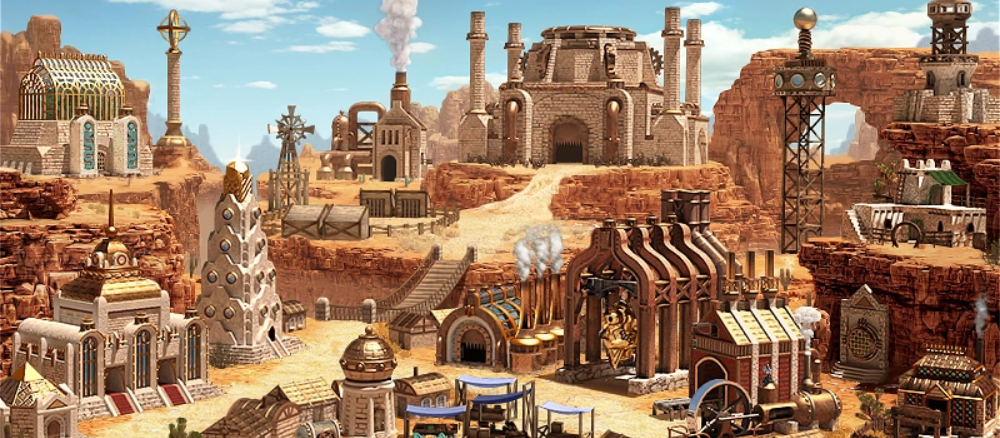
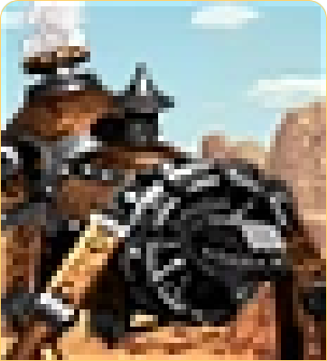

Автоматон


«Я создан для того, чтобы служить своему хозяину. Моя задача — выполнять приказы и защищать тех, кто нуждается в моей помощи»
«Я создан для того, чтобы служить своему хозяину. Моя задача — выполнять приказы и защищать тех, кто нуждается в моей помощи»
Автоматон — это уникальное существо, созданное с помощью магии и технологий. Он представляет собой механического воина, который обладает невероятной силой и выносливостью. Автоматон может быть настроен на различные задачи, от боевых действий до выполнения сложных инженерных работ. Его тело покрыто прочными металлическими пластинами, а внутри него бьётся магический механизм, который поддерживает его жизнь.
В игре за Автоматона вы сможете использовать его уникальные способности, такие как:
Боевые навыки: Автоматон обладает высокой защитой и атакой, что делает его опасным
противником на поле боя. Вы сможете настроить его боевые характеристики в зависимости от
вашей стратегии.
Инженерные способности: Автоматон также может выполнять инженерные работы, такие как
строительство зданий и ремонт механизмов. Это позволит вам создавать более эффективные
армии
и укрепления.
Магические способности: В зависимости от настроек, Автоматон может обладать различными
магическими способностями, такими как исцеление или усиление союзников.
Автоматон оснащён специальным ремонтным модулем, который позволяет ему автоматически восстанавливать повреждения. Эта способность активируется, когда Автоматон не участвует в бою и находится в состоянии покоя. Ремонтный модуль восстанавливает часть здоровья Автоматона каждый ход, что делает его практически неуязвимым в долгосрочной перспективе.
Эта особенность позволяет Автоматону побеждать врагов за счёт своей выносливости и способности восстанавливаться после каждого сражения. Он может участвовать в битвах снова и снова, не требуя длительного времени на восстановление, как это бывает с другими существами.
|  | |
| Характеристики | Значение |
|---|---|
| Атака | 12 |
| Защита | 10 |
| Здоровье | 30 |
| Урон | 7-8 |
| Скорость | 8 |
| Выстрелов | 0 |
| Перемещение | По земле |
| Размер | 2 |
| Принос | 5 (Замок) |
|---|---|
| Стоимость | 350 золота |
| Здание | Мануфактура |
| Улучшение | Автоматов-Часовой |
Главные ошибки игры за Автоматона:
Игнорирование инженерных способностей. Автоматон может строить здания и ремонтировать
механизмы, что делает его полезным не только в бою, но и в развитии базы. Пренебрежение
этими способностями ограничивает потенциал героя и снижает эффективность армии.
Недостаточное внимание к настройке навыков. Автоматон обладает широким спектром навыков,
которые можно настроить под различные стили игры. Неправильный выбор навыков может привести
к неэффективному использованию существа и снижению его полезности в армии.
| Навык | Описание | Эффект |
|---|---|---|
| «Механический рывок» | Автоматон совершает мощный рывок вперёд, нанося урон всем противникам на своём пути. | Увеличивает скорость передвижения автоматона и позволяет ему быстро перемещаться по полю боя, а также наносить урон врагам при столкновении. |
| «Перезарядка» | Автоматон на короткое время увеличивает свою эффективность, перезаряжая свои механизмы. | Повышает атаку и защиту автоматона, позволяя ему наносить больше урона и выдерживать больше атак. |
| «Магическая защита» | Вокруг автоматона создаётся магический щит, который отражает часть урона от вражеских атак. | Снижает получаемый автоматроном урон, увеличивая его выживаемость на поле боя. |
| «Инженерный анализ» | Автоматон анализирует структуру здания или механизма, выявляя его слабые места. | Позволяет автоматрону обнаруживать уязвимости в строениях и механизмах противника, что может быть использовано для более эффективного разрушения или улучшения собственных сооружений. |
Ремонтный модуль является ключевой особенностью автоматона, позволяющей ему восстанавливаться после сражений. Однако неправильное использование этой способности, например, активация в неподходящее время или в неподходящем месте, может снизить эффективность автоматона.
. . .